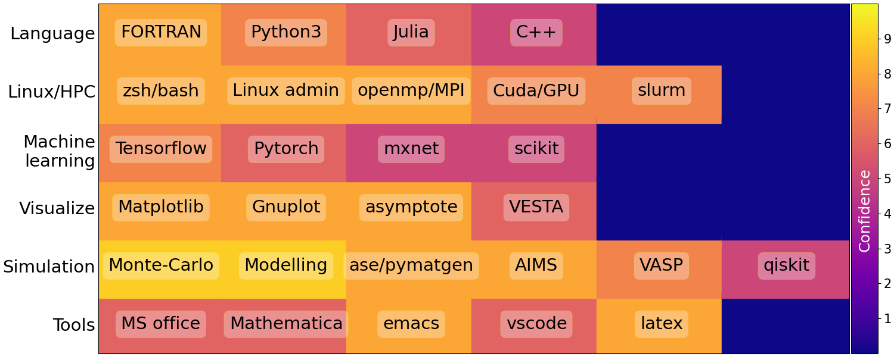

Dr. Rajarshi Tiwari#
Curriculum Vitae#
My |
Details |
|---|---|
address |
232 Sundrive Road, Crumlin, Dublin 12, Ireland |
phone |
+353899610436, +919919270219 |
homepage |
|
rajarshi-tiwari |
|
rajr0 |
|
github |
rajarshitiwari |
gitlab |
rajarshitiwari |
 {width=”150”}
{width=”150”}
Basic information#
Bio |
|---|
Indian National |
DOB: April 30, 1984. Married |
Resident in Ireland for 10 years |
Positions and Roles#
2013-2023 |
Research Fellow |
School of Physics, CRANN and AMBER, Trinity College Dublin, Ireland |
2023-Now |
Sr. Computational Scientist |
Irish Centre of High End Computing, Dublin, Ireland |
Education#
Years |
Degree |
Institution |
|---|---|---|
2008-2014 |
PhD in Condensed Matter Physics^[1] |
Harish Chandra Research Institute, Allahabad, India |
2005-2008 |
MSc in Physics |
Harish Chandra Research Institute, Allahabad, India |
2002–2005 |
BSc in Physics and Mathematics |
University of Allahabad, India |
[1]: Thesis: The effect of geometrical frustration on some correlated electron systems, Supervisor: Prof. Pinaki Majumdar.
Short biography#
I come from a city of Allahabad, in the state of Uttar Pradesh in India, where I got most of my education. I did my B.Sc. from University of Allahabad, India with Physics and Mathematics as major in 2005. Then I joined the Integrated Ph.D. (M.Sc. + Ph.D.) program at Harish-Chandra Research Institute (HRI), Allahabad, India. I finished my MSc in Physics from HRI in 2008, and PhD in Condensed Matter Physics in 2013. Thereafter, I joined Prof. Stefano Sanvito’s research group at Trinity College, Dublin in 2013 for a year as Research Assistant, and after defending my thesis in September 2014, I continued there as post-doctoral researcher. Currently I am a Research Fellow in the School of Physics, and work over a range of project that overlap material science, many-body theory, high-througput DFT and machine learning.
Computational Skills#

Research Interests#
My research insterest include solving models of electron correlation, high throughput \textit{ab-initio} simulations for material science. I also explore the use of Machine learning in these fields to expand and accelerate my research.
Machine Learning in material science#
After joining Trinity College Dublin, I expanded my research interests over computational materials science along with condensed-matter physics, where I explore application of machine learning in (i) solving or learning features in correlated systems and (ii) high-throughput ab initio calculations. I learnt ab-initio simulations tools such as VASP/FHI-AIMS to compute energetics of real systems, organize and process the data for ML applications. Here at TCD, we are also working on developing a workflow to combine ab-initio and ML tools to build up force fields for simulating large, disordered systems. The ICHEC-Flagship project “EuroCC-AF-3” has been quite helpful in this direction.
Following are the categories of ML applications I am involved with varying level of intensity -
Exploring methods for structure property relations of materials with use of High-Throughput ab initio.
Applying ML in models of many-body physics, such developing ML based lattice density functional theory for models.
Exploring possibilities of DNNs as generative models for solving many-body problems in correlated systems.
Computational interests#
Ever since I joined my Ph.D. program back in India, computational field always intrigued me. This meant not only learning the languages and tools to do the required computations, but also learning how the hardware + software works together. I developed interest in Linux/HPC tools, by installing and exploring numerous linux distributions ranging from Ubuntu to Archlinux. I like the opportunity to play with new hardwares whenever possible.
My recent interest was exploring GPUs to accelerate some of our calculations. I secured “NVIDIA Academic Hardware Grant” last year, and had the GPUs installed in HPC machines, which boosted the group’s interest. As a result, this year half of our group, and others as showed interests and applied for the same grant for a range of projects.
We are also slowing gearing towards Quantum Computation (QC) in the area where some of our expertise may find overlap. One of the direction we percieve could be the application of QC in solving many-body problems. However, my current exposure is limited to some exploration of Qiskit package and a course of IBM-Quantum Fridays. I am however interested in exploring this further.
Teaching/training/industry#
I often co-supervise (i) summer interns (ii) final year project students and (iii) Ph.D. students in Prof. Sanvito’s group over a range of problems on solving many-body models, ab-initio and machine learning. Some of the undergrads develop interest in academia and join Ph.D. programme either at Trinity with us or elsewhere.
I have worked in past on projects partnered with Industry as AMBER researcher, such as Nokia’s project for
searching corrosion resistant metal alloys, and recently, modelling magnetism in High Entropy Alloys.I coordinate with Trinity HPC team for our group’s computational requirements. We have developed a local ecosystem to facilitate the necessary training, softwares, and other computational needs to younger members of the group.
I also participate in preparing the hardware specifications and tenders of HPC systems/workstations that we purchase.
Publications#
Emergence of highly bond-dependent anisotropic magnetic interactions in Sr\(_4\)RhO\(_66\): a theoretical study, S. K. Pandey, Q. Gu, R. Tiwari, arXiv:2207.05045, 2022.
Reactivity of transition-metal alloys to oxygen and sulfur, R. Tiwari, J. Nelson, C. Xu, and S. Sanvito, PRMaterials 5 083801, 2021.
Machine-learning semilocal density functional theory for many-body lattice models at zero and finite temperature, J. Nelson, R. Tiwari, and S. Sanvito, PRB 103 245111, 2021.
Orbital mott transition in two dimensional pyrochlore lattice, A. Saket and R. Tiwari, JPCM 32 255601, 2020.
Machine learning density functional theory for the hubbard model, J. Nelson, R. Tiwari, and S. Sanvito, PRB 99 075132, 2019.
Cr doping induced negative transverse magnetoresistance in Cd\(_3\)As\(_2\) thin films, Y. Liu et al, PRB 97 085303, 2018.
Mott-hubbard transition and spin-liquid state on the pyrochlore lattice, N. Swain, R. Tiwari, and P. Majumdar, PRB 94 155119, 2016.
Spectroscopic signatures of the mott transition on the anisotropic triangular lattice, R. Tiwari and P. Majumdar, EPL 108 27007, 2014.
Mott transition and glassiness in the face centered cubic lattice, R. Tiwari and P. Majumdar, arXiv:1302.2922, 2013.
The crossover from a bad metal to a frustrated mott insulator, R. Tiwari and P. Majumdar, arXiv:1301.5026, 2013.
Noncollinear magnetic order in the double perovskites, R. Tiwari and P. Majumdar, IJMP B, 27 1350018, 2013.
Visualizing the mott transition, R. Tiwari and P. Majumdar, Current Science 103 518-524, 2012.
Exchange interactions and magnetic phases of transition metal oxides: Benchmarking advanced ab initio methods, T. Archer et al, PRB 84 115114, 2011.
References#
Post-Doctoral#
Prof. Stefano Sanvito School of Physics and CRANN Trinity College Dublin, Ireland :phone: +35318963065 :email: sanvitos@tcd.ie
External#
Prof. Alessio Filippetti Dipartimento di Fisica, Università di Cagliari, ITALY. :phone: (+39) (070) 675 4853 :email: alessio.filippetti@dsf.unica.it
Doctoral#
Prof. Pinaki Majumdar Harish Chandra Research Institute Prayagraj, UP, INDIA :phone: +915322274316 :email: pinaki@hri.res.in